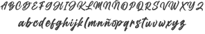
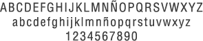
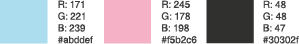

IDENTIDAD CORPORATIVA
Para la representación de este emprendimiento de mercería, se realizó un isologotipo que posee síntesis en su comprensión, y además se lo reforzó con una semantización tipográfica en la letra O, que también significa un botón. Este logo fue pensado para su posible reductibildad y uso sobre otros soportes.

La tipografía utilizada es Billion Dreams Regular que transmite ternura y elegancia como lo es esta muñequita de porcela y para el eslogan Helvética LT Std en su variable Condensed por su excelente legilibilidad y comprensión para el usuario.
- Billion Dreams Regular:

- Helvetica LT Std Condensed:

Los colores utilizados, son en tonalidades pasteles, los cuales representan las vestimentas de Bo Peep a lo largo de las películas. El contorno en gris oscuro, para potenciar aún más la marca.
